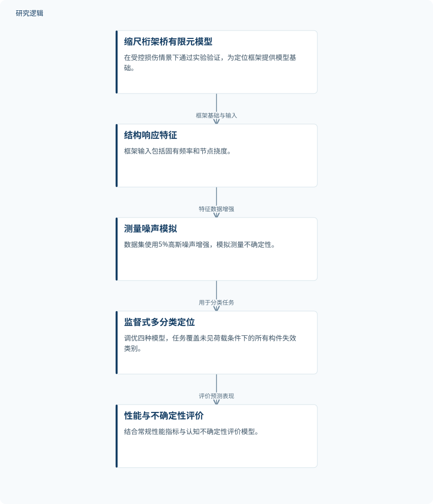

摘要解读
面向桁架桥关键失效定位的不确定性感知机器学习框架
Uncertainty-aware machine learning framework for localization of critical failures in truss bridges
解读更新 2026-11-10 10:33 · 依据公开摘要整理，未核验全文细节
桁架桥发生局部构件失效后，如何尽早定位损伤，并判断机器学习预测是否可信？这项研究将结构响应特征与不确定性评价结合，提示监测模型的关键可能不在于网络架构，而在于输入特征能否有效反映损伤。
文章目录
结构有冗余，仍需识别初始失效
桁架桥能够承担跨越长距离的重载运输，但设计中的冗余并不能消除劣化风险。局部失效可能进一步引发连续倒塌，因此，监测不仅需要发现异常，还需要识别最初失效的构件。
本文聚焦初始构件失效的早期定位，而不是直接预测倒塌全过程。研究还把未见过的荷载条件纳入分类任务，关注模型能否识别损伤相关响应，而非仅记住特定荷载下的模式。
用结构响应分类，同时评价认知不确定性
研究采用缩尺桁架桥的有限元模型，并在受控损伤情景下通过实验验证。定位任务被表述为覆盖所有构件失效类别的多分类问题，输入特征包括固有频率和节点挠度。
数据集加入5%高斯噪声进行增强，以模拟实际测量不确定性。作者对四种监督式机器学习模型进行调参与评价，除常规性能指标外，还考察认知不确定性，使预测表现与预测信心共同进入评价。
依据摘要整理的失效定位框架


概括摘要明确报告的模型基础、输入特征、噪声增强与评价关系，并非论文原图，不表示未报告的数据生成细节。
下载 SVG图示关系说明
实线表示相邻阶段的信息流，虚线表示跨阶段联系或反馈。
缩尺桁架桥有限元模型 → 结构响应特征：框架基础与输入；结构响应特征 → 测量噪声模拟：特征数据增强；测量噪声模拟 → 监督式多分类定位：用于分类任务；监督式多分类定位 → 性能与不确定性评价：评价预测表现
相近准确率背后，特征比架构更值得关注
摘要报告，Deep MLP、1D-CNN和SVM的初步表现一致，准确率约为70%，且具有较强的预测信心。作者认为，这些模型捕捉到了对损伤敏感的行为，而非特定荷载模式。
扩展分析中，这三种模型在不同噪声水平、类别配置和特征集下表现稳定。误分类趋势反映了桥梁结构的对称性，预测信心也与识别出的敏感性模式相吻合。
研究据此指出，预测性能主要受到物理信息特征的质量与表征方式影响，而非机器学习架构本身。这为传感器集成、特征选择和考虑不确定性的决策提供了参考，但不等于已证明实际桥梁监测效果。
缩尺验证的覆盖范围仍需查阅全文
仅凭摘要，无法判断样本规模、数据划分方式、各失效类别的分布，以及未见荷载的具体范围；第四种模型的名称和结果也未在摘要中展开。噪声增强数据不能据此视为新增的独立实验样本。
摘要未提供不确定性的计算与校准细节，也不足以判断缩尺桥结果对实际桥梁、长期劣化或其他结构形式的适用性。这些属于当前资料无法确认的边界，不能解读为论文没有开展相关比较或验证。
阅读启发：先问特征能否区分对称构件
阅读启发：面向智能运维，可优先追问固有频率与节点挠度分别提供了哪些定位信息，哪些对称构件容易混淆，以及预测信心能否提示这些歧义。进一步阅读时，应关注传感器布置、特征组合与不确定性评价的联系，而非仅按准确率选择模型。
以上为本站阅读启发与建议，不是论文已验证的结论。